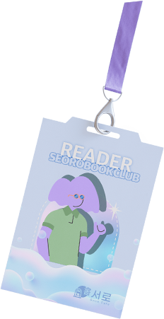
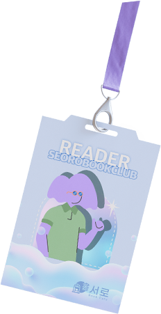

믿고 보는 서로's Pick!
인간에게 광증을 퍼뜨리는 아포(芽胞)로 가득찬 지상 세계. 사람들은 어둡고 퀴퀴한 지하 도시로 떠밀려와 반쪽짜리 삶을 이어간다.
형편없는 음식에 만족하며, 혹여라도 광증에 걸릴까 두려워하며. 하지만 태린은 누구보다 지상을 갈망한다.
그에게 일렁이는 노을의 황홀한 빛깔과 밤하늘을 가로지르는 별들의 반짝임을 알려준 이가 있었기 때문에.
시공간을 끊임없이 확장하는 여성 작가들은 강렬하고 불온한 바깥 세계를 상상한다.
이 거대한 흐름에, 한국 SF의 가장 뜨거운 여성 작가 다섯 명이 동참하여 지구를 넘어선 ‘여성만의 우주, 여성만의 행성, 여성만의 이야기’를
다룬 앤솔러지를 기획하게 된다.
『고독사 워크숍』은 평범한 일상을 살아가며 존엄한 죽음을 꿈꾸는 인물들의 시시하고 모순된 욕망을 옴니버스 형식으로 보여 준다.
고독한 일상을 살아내는 각기 다른 방식을 보여 주는 13편의 이야기들은 고독사 워크숍의 참가자들이 털어놓는 내밀한 자기 이야기이기도 하고,
고독했던 자신과 타인의 과거를 애도하며 지어낸 가상의 이야기이기도 하다.
책을 읽고 글을 쓰는 여자들이 경험하는 강렬하고도 특별한 연결
우정의 필수 조건은 무엇일까? 시공간이 다르거나, 정서적 친밀감이 없더라도 그 관계를 우정이라고, 친구라고 부를 수 있을까? 저자는 한나
아렌트가 내린 우정의 정의를 제안한다.
그는 친밀감을 강조하는 우정보다 “정치적 요구를 제기하며 세계와의 관계를 유지”하는 우정,
즉 세상을 변화시키며 세상에서의 자신의 자리를 주도적으로 찾아 나가는 관계로서의 우정을 진짜라 여겼다.
시인은 “이미 이해한 세계는 떠나야 한다”(「식구들」)고 단호하게 쓰고 있다
더 이상 이해를 필요로 하지 않는 것들로 새로운 이해의 깊이를 가장해서는 안 되기 때문이다.
그래서 시인은 지금 밤을 떠나 새벽에 이르렀다.
새벽은 “해가 느릿느릿 뜨고” “침엽들이 냉기를 버리고 더 뾰족해”(「새벽」)지는 시간이다.
“달도 가짜라는 소문 들었어
그래도 네가 편안한 밤 보내면 좋겠다”
지금, 여기로부터 멀어짐으로써 가닿는 신예 조시현의 빛나는 상상력
이번 시집은 멸종된 ‘지구 인간’을 중심으로...
'지금 이 시대의 고통’을 다루는 저널리스트, 김인정이 세계를 향해 던지는 뼈아픈 질문
“우리는 너무 손쉽게, 너무 많은 죽음을 본다”
이제 타인의 고통은 단순히 연민과 대상화를 넘어 더 많은 구독과 좋아요, 알림 설정을 위해...
전 세계 모든 곳에서, 집중하는 우리의 능력은 붕괴하고 있다. 미국의 10대들은 한 가지 일에 65초 이상 집중하지 못한다. 직장인들의 평균 집중 시간은 단 3분에 불과하다. 뉴욕타임스 베스트셀러 작가이자 저널리스트인 요한 하리는...
코로나 음모론자, 기후 위기 회의론자, 가짜 뉴스 신봉자… 인간은 왜 같은 것을 보고 서로 다른 논리에 빠질까?
모두가 자신의 생각이 옳다고 착각하는 이유는?
작가는 우리가 보고 믿고 진실이라 생각하는...
요즘 새로 나온 책 어때?

리더스 스페이스의 우주 일러스트가 담긴
3.0 128GB 대용량 USB
다른 사람들은 어떤 책을 읽고 있을까?
디플롯 출판
02/25 교양과학 4회차
고프가 지적하는 것은 비인간화, 구체적으로 말하면 유인원화다.
어떤 개인이나 집단을 유인원으로 부르거나 유인원에 비유하다 보면 사람들의 심리에 도덕적 배제가 발생하며,
이렇게 유인원화의 표적이 된 개인이나 집단은 기본 인권을 지켜줄 필요가 없는 존재가 된다.
편견보다 유인원화가 현재 미국 사회에 존재하는 인종 간 격차를 더 잘 설명해주는 것이다.
<불쾌한 골짜기>
p.218

곰출판
02/25 교양과학 4회차
이 세계에는 실재인 것들이 존재한다.
우리가 이름을 붙여주지 않아도 실재인 것들이.
어떤 분류학자가 어떤 물고기 위로 걸어가다가 그 물고기를 집어 들고 “물고기”라고 부른다고 해서 그 물고기가 신경이나 쓰겠는가.
이름이 있든 없든 물고기는 여전히 물고기인데...
p.95
흐름 출판
02/25 여성과 과학 4회차
그리스의 스토아학파 철학자 에픽테토스는 이런 말을 남겼다.
“합리적인 존재에게 견딜 수 없는 대상은 비합리적인 존재뿐이다. 그 밖의 다른 합리적인 대상은 견딜 수 있다.”
그렇다면 내가 어떤 조치를 취해야 하는지가 분명한, 잘 알려진 위기는 나에게 합리적이고 견딜 수 있는 대상이다.”
<매일 벽돌 한 장 쌓기>
p.329
휴머니스트 출판
02/24 고전문학 8회차
“이제는 참는 것도 지쳤어요.” 내가 대답했어.
“그 보복이 나에게 되돌아오지만 않는다면, 나도 기꺼이 보복하고 싶어요.
하지만 배반과 폭력은 양날의 창이에요.
그것에 의지하는 사람은 자신의 적보다 더 큰 상처를 입게 되는 법이죠.”
<매일 벽돌 한 장 쌓기>
p.329
알에이치코리아 출판
02/19 장르소설뿌수기 5회차
“다른 유사성. 너랑 나는 둘 다 우리 사람들을 위해 기꺼이 죽으려 함. 왜, 질문? 진화는 죽음을 싫어함.”
“종족 전체로 봐서 좋은 일이잖아.”내가 말한다.
“자기희생 본능은 종 전체가 지속될 가능성을 높여줘.”
“모든 에리디언이 다른 이들을 위해 기꺼이 죽지는 않음.”
나는 키득거린다. “인간들도 그래.”
“너랑 나는 좋은 사람.” 로키가 말한다.
“그러게.” 나는 미소 짓는다. “그런 것 같아.”
안전가옥 출판
02/26 장르소설뿌수기 6회차
묘마마가 똘이에게 마실 물을 내주며 말했다.
“윗물이 똥물이래도 아랫물은 맑아야지 않겠습니까.”
“응?”
“모르시면 됐습니다.”
p.75
나는 취미를 책으로 배웠지


 
